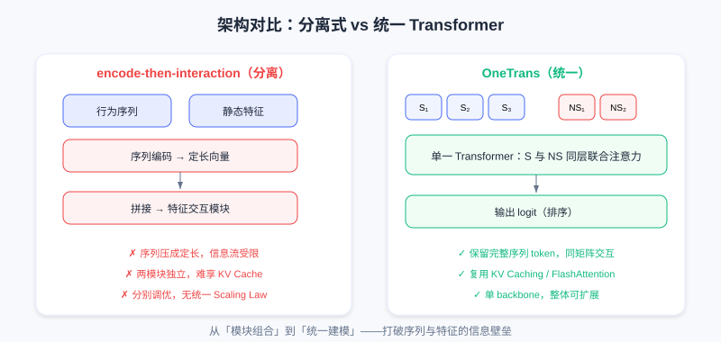
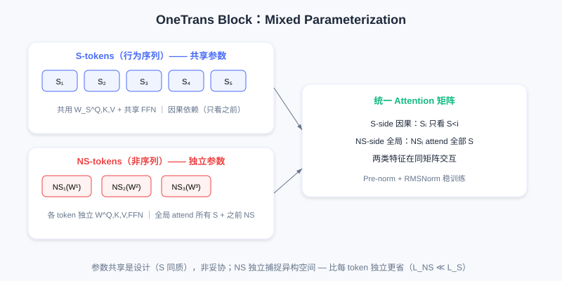

OneTrans：统一序列与特征交互
📝 Before You Continue: 已读 7.4 RankMixer（模型内计算效率）。本章更进一步——打破「序列建模模块」与「特征交互模块」的架构壁垒，用单一 Transformer backbone 做端到端联合优化，并复用 LLM 系统优化。
RankMixer 通过 hardware-aware 设计解决了 GPU 利用率问题，但推荐系统整体架构仍碎片化。工业界主流推荐模型普遍采用 encode-then-interaction（先编码后交互） 范式：序列建模模块（DIN、LONGER）把行为序列编码为固定长度向量，再与非序列特征拼接，输入特征交互模块（如 RankMixer）学高阶交叉。
这种分离式设计有两个根本问题：(1) 信息流受限——序列必须压缩为固定维向量，静态特征无法在序列编码阶段发挥作用，只能后期「补救式」融合；(2) 执行碎片化——两模块独立执行，无法享受 LLM 系统优化（KV Caching、FlashAttention），且需分别调优，难形成统一 Scaling Law。
OneTrans 提出根本性架构革新：用单一 Transformer backbone 同时完成序列建模和特征交互。通过统一 tokenizer 把序列特征（S-tokens）和非序列特征（NS-tokens）转为统一 token 序列，在堆叠 Transformer 层联合建模，打破序列与特征的信息壁垒，为应用 LLM 系统优化奠基。
7.5.0 统一 Tokenization
推荐输入含两类截然不同特征：序列特征 （用户多行为序列，如点击、加购、下单序列）与非序列特征 （静态属性与上下文，如年龄、类目、查询词、时段）。传统方法把 压成固定向量后与 拼接；OneTrans 核心创新是把两类特征统一转为 token 序列，在同一 Transformer 处理。
对序列特征 （ 种行为类型），每序列 含 个事件 embedding（事件 = 物品 ID + 物品侧信息）。因不同行为序列原始维度可能不同，先用行为特定 MLP 对齐到统一维度 ：
对齐后多序列需合并为单一 token 序列。OneTrans 支持两种融合策略：(1) Timestamp-aware——若行为带时间戳，按时间交错排列所有行为并加行为类型标识符；(2) Timestamp-agnostic——若无时间戳，按行为意图强度排序（下单选 > 加购 > 点击），不同序列间插可学习 [SEP] token 分隔。实验表明有时间戳时 timestamp-aware 更好（时间顺序蕴含兴趣演化）。最终：
对非序列特征 （数值与类别特征，经 bucketization 或 one-hot 后 embedding），OneTrans 把所有特征 concat 后通过单个 MLP 投影，再切分为 个 token（称为 Auto-Split Tokenizer）：
这避免手工特征分组的主观性，让模型自动学如何组织非序列特征。最终初始输入是 S-tokens 与 NS-tokens 拼接：

左：传统分离式（序列编码为定长向量后与静态特征拼接，信息流受限）；右：OneTrans 统一 token 序列，S-tokens 与 NS-tokens 在同一 Transformer 联合建模。
与传统方法有本质区别：传统压缩序列为单个向量，OneTrans 保留完整序列 token。后续 Transformer 层中，每个行为事件作为独立 token 参与 attention，非序列特征也以 token 形式存在，两类特征可在同一 attention 矩阵中交互。
7.5.1 Mixed Parameterization 的核心机制
若直接用标准 Transformer 处理统一 token 序列，会遇到推荐特有难题：token 异质性。LLM 中所有 token 都是词/sub-word，语义空间统一，共享 Q/K/V 和 FFN 合理。但 OneTrans 中 S-tokens 来自行为序列（同质性强，都是用户—物品交互事件），NS-tokens 来自完全不同空间（年龄是人口统计、价格是数值、查询词是文本）。强制所有 token 共享参数会导致冲突——例如捕捉「序列中相邻物品相似性」的参数，对「用户年龄→物品类目」交互可能完全不适用。
OneTrans 核心创新是 Mixed Parameterization（混合参数化）：S-tokens 共享一套参数，每个 NS-token 拥有独立的 token-specific 参数。基于两个观察：(1) 行为序列所有事件在同一语义空间（物品空间），可高效共享参数学序列模式；(2) 非序列特征来自异构空间，需独立参数捕捉各自特性。
Mixed Causal Attention
OneTrans Block 中 Multi-Head Attention 的 Q/K/V 采用混合参数化。第 个 token 的 query/key/value：
权重矩阵 遵循条件参数化：
所有 S-tokens 用同一组 ；第 个 NS-token 有自己的 等。
OneTrans 采用 Causal Attention Mask，但 NS-tokens 置于 S-tokens 之后，导致三个关键信息流模式：
- S-side 因果依赖——每 S-token 只能 attend 之前的 S-tokens。timestamp-aware 自然建模时间因果；timestamp-agnostic（按意图排序）下 causal mask 让高意图行为（下单选）信息传到低意图（点击），实现「强信号过滤弱信号」。
- NS-side 全局 attention——每 NS-token 可 attend 所有 S-tokens（完整行为历史）及之前的 NS-tokens。使非序列特征充分利用序列证据，如「物品类目」token 可 attend 所有历史点击类目，自动学「用户对该类目历史偏好」。
- 支持 Pyramid——causal mask 方向性使信息自然向序列尾部聚集，为 Pyramid Stack 提供理论基础。
Mixed FFN
FFN 同样混合参数化：
与 attention 同条件参数化：S-tokens 共享 ，每 NS-token 独立。
需与 RankMixer 的 Per-Token FFN 对比：RankMixer 为每个 token 配独立 FFN（含序列 token），参数 ；OneTrans 的 Mixed FFN 只为 个 NS-tokens 配独立参数，S-tokens 共享，参数 。推荐中 ，OneTrans 在保表达同时显著降低参数开销。参数共享不是妥协，而是设计——行为序列同质性使共享参数更高效学序列模式，避免冗余。
OneTrans 用 Pre-norm + RMSNorm。S-tokens 与 NS-tokens 数值范围/统计差异显著，Post-norm 易致 attention 分数尺度失衡引发训练不稳；Pre-norm 在子层前先归一化，确保输入 attention/FFN 的 token 表示尺度相近，RMSNorm 进一步通过 root mean square 归一化提供更稳梯度传播。

S-tokens 共享 Q/K/V/FFN 参数并因果依赖；NS-tokens 独立参数、可全局 attend 所有 S-tokens。两类特征在同一 attention 矩阵交互。
7.5.2 Pyramid Stack 渐进式蒸馏
OneTrans 的 Causal Attention 有一重要特性：信息自然向序列后方聚集。第 层位置 融合 信息；第 层位置 又融合更新后的 。随层数加深，靠后 token 渐成前面所有 token 信息的「汇聚点」。特别地，NS-tokens 位于序列末尾，深层会积累整个序列与前面 NS-tokens 信息。
Pyramid Stack 利用此特性：逐层减少参与 attention 的 query token 数量，只保留序列尾部 token。设第 层输入长度 ，定义尾部索引集 （）。attention 计算：
- Keys 和 Values：仍从所有 个 token 算，保持完整上下文
- Queries：只从 中 个 token 算
attention 输出只保留 对应位置，序列长度从 缩到 。多层间设递减的 （如 1190 → 595 → 297 → … → 12），形成金字塔式层级。

每层的 query 只取尾部 个 token（含 NS-tokens），Keys/Values 用全部 token；序列长度逐层减半，信息逐步蒸馏到尾部。
两个核心收益：
- Progressive Distillation（渐进式蒸馏）——长行为序列（数百上千事件）逐层收缩，信息逐步「蒸馏」到少量尾部 token。浅层学局部模式（相邻物品相似），深层在压缩 token 上学全局模式（长期兴趣漂移）。最终所有序列信息汇聚到 NS-tokens，为下游提供紧凑而信息丰富的表示。
- Compute Efficiency——标准 Transformer attention 复杂度 ，FFN 。Pyramid 降到 （attention）与 （FFN）。当 （如 1190 逐层减到 12），计算量与激活内存显著下降。
与标准 Transformer 关键差异：标准需在每层保持完整序列长度（LLM 要输出每位置预测）；推荐只需最终排序分数，中间序列 token 可逐层丢弃，只要尾部 token 充分融合历史。Causal attention 方向性保证这一点。
7.5.3 Cross-Request KV Caching
统一架构的关键优势是可无缝应用 LLM 系统优化，最重要的是 KV Caching。一次请求通常返回数百候选，每候选对应一个样本，这些样本用户侧特征完全相同（同用户、同行为序列），只有物品侧不同。传统 encode-then-interaction 中序列编码模块虽可复用，但特征交互模块须为每个候选重算，无法充分利用共享结构。
OneTrans 统一 Transformer 自然支持两阶段计算：
Stage I（S-side，每请求一次）——处理所有 S-tokens，算每层 K/V 及 attention 输出并缓存。此阶段每请求只执行一次，与候选数无关。
Stage II（NS-side，每候选）——对每个候选算其 NS-tokens，每层执行：用缓存的 S-side K/V、算 NS-tokens 的 queries、执行 Cross-Attention（NS attend 缓存的 S-side K）、执行 NS-tokens 间 Self-Attention、经 token-specific FFN 处理 NS-tokens。
关键：S-tokens 的 KV 在所有候选间共享，只有 NS-tokens 的 QKV 需每候选重算。设一次请求 个候选，传统需 序列计算，KV Caching 降到 。因 ，复杂度近似 （相对候选数 ）。
更进一步，OneTrans 实现 Cross-Request KV Caching。用户行为序列是 append-only 的，每次新请求相比上次只在末尾新增少量事件。可在多请求间复用 KV cache：
- 首次请求——算完整序列 KV，缓存
- 后续请求——只算新增 个事件的 KV，与旧 cache 拼接
每次请求序列计算从 降到 （ 通常个位数）。高频场景（信息流刷新）用户序列短时变化很小，Cross-Request KV Caching 收益尤显著。
Stage I 每请求算一次 S-side KV 并缓存；Stage II 每候选只算 NS-side；跨请求仅追加 个新事件 KV，复用旧 cache。
需注意，KV Caching 有效性依赖统一 Transformer 计算图。若序列建模与特征交互是两独立模块，它们中间表示无法跨候选复用（输入/参数完全不同）。OneTrans 通过统一 tokenization 与 Mixed Parameterization，把两类特征置于同一 attention 矩阵，使 S-tokens 的 KV 可被所有候选 NS-tokens 共享——这是 encode-then-interaction 无法实现的。
除 KV Caching，OneTrans 还继承 LLM 其他优化：FlashAttention-2（kernel fusion + memory tiling 减 attention I/O、降激活内存）、Mixed-Precision Training（BF16/FP16）与 Activation Recomputation 结合（保数值稳定同时压内存）。这些对训练部署数亿参数 OneTrans 至关重要。
7.5.4 统一建模的本质
OneTrans 核心贡献是推荐架构根本性转变：从模块组合到统一建模。传统 encode-then-interaction 把序列编码与特征交互分离为独立模块，不同类型交互（序列内、跨序列、多源特征、序列—特征）被人为隔断。OneTrans 通过统一 Transformer 让这些交互在每层同时发生，多层堆叠形成复杂组合模式。
统一架构另一关键优势是整体可扩展性。分离架构需分别调优序列与交互模块，难形成统一 Scaling Law。OneTrans 把整个模型统一为单一 Transformer backbone，扩展策略简单明确：加层数（depth）、加隐藏维度（width）、加序列长度（length）——推荐模型可像 LLM 一样获可预测性能提升。
从 RankMixer 到 OneTrans，推荐架构演进两方向清晰可见：hardware-aware 计算设计解决 GPU 利用率，统一建模框架打破模块碎片化壁垒。两者结合为推荐系统走向大规模、可扩展智能化奠基。
💡 Key Insight: 本章是 Part 7 的收尾——从 HSTU 验证 Scaling Law，到 GenRank 追问本质、MTGR 兼容特征、RankMixer 优化硬件、OneTrans 统一架构。五个工作从架构、训练、特征、硬件、统一性五个角度，共同证明：推荐系统不再是深度学习 Scaling 的「例外」。
⚠️ Common Mistakes in 7.5
| # | Mistake | Example | Why It's Wrong | Fix |
|---|---|---|---|---|
| 1 | 以为 OneTrans 只是 RankMixer 换皮 | 「都是 Transformer，没区别」 | OneTrans 打破序列/特征模块壁垒，统一 token | 区分「模型内效率」vs「架构统一」 |
| 2 | 让所有 token 共享参数 | 「统一序列就用标准 Transformer」 | S/NS token 异质，共享参数冲突 | 用 Mixed Parameterization（S 共享/NS 独立） |
| 3 | 把序列压成定长向量 | 「S-tokens 先 pooling 再拼 NS」 | 丢失逐事件交互，回到 encode-then-interaction | 保留完整序列 token，同 attention 交互 |
| 4 | 忽略 Pyramid 的因果前提 | 「随便截断 query 就行」 | 需 causal mask 保证尾部汇聚历史 | 仅保留尾部 个 query，KV 用全部 |
| 5 | 以为 KV Cache 在分离架构也能用 | 「DIN+RankMixer 也能跨候选复用」 | 两模块输入/参数不同，中间表示不可跨候选复用 | 统一计算图是 Cross-Request KV Cache 前提 |
本章小结
📌 Key Takeaways
| Concept | Key Points | Why It Matters |
|---|---|---|
| 统一 Tokenization | S-tokens（序列）+ NS-tokens（非序列）同序列 | 打破序列/特征信息壁垒 |
| Mixed Parameterization | S 共享参数 / NS 独立参数 | 解决 token 异质性冲突 |
| Pyramid Stack | 逐层收缩 query 到尾部，KV 用全部 | 渐进蒸馏 + 计算效率 |
| Cross-Request KV Cache | S-side KV 跨候选/跨请求复用 | 复杂度近 （相对候选） |
| 统一建模本质 | 单 Transformer backbone 联合优化 | 整体可扩展，形成统一 Scaling Law |
❓ FAQ
Q1: OneTrans 和 RankMixer 最大的区别是什么？
A: RankMixer 聚焦模型内部计算效率（Token Mixing 替代 attention、MFU 45%），但仍把序列与特征当作可分离的输入；OneTrans 更进一步，把序列事件和非序列特征统一为 token 序列，在同一 Transformer 内联合建模，并复用 KV Caching 等 LLM 系统优化。
Q2: 为什么 S-tokens 共享参数、NS-tokens 独立？
A: 行为序列所有事件在同一「物品空间」，同质性高，共享参数更高效学序列模式、避免冗余；非序列特征来自异构空间（人口统计/数值/文本），需独立参数捕捉各自特性。这是「参数共享是设计而非妥协」。
Q3: Pyramid Stack 为什么能丢中间 token？
A: 推荐只需最终排序分数，不需像 LLM 输出每位置预测。Causal attention 使信息向尾部汇聚，保留尾部 个 query（含 NS-tokens）、KV 用全部 token，即可在大幅降计算的同时不丢历史信息。
🔗 前后关联
- 7.1（HSTU） 的 M-FALCON 首次提出 KV Caching 解绑历史与候选；OneTrans 的 Cross-Request KV Caching 是其思想在统一架构上的延伸。
- 7.4（RankMixer） 的硬件效率是 OneTrans 统一架构可扩展的基础；两者共同指向「推荐模型成为 GPU 一类公民」。
- Part 6 生成式基础 与 Part 8 端到端生成 把统一建模思想推向「召回—排序—重排」全链路，可顺着这条线继续读。
Practice Problems
Work through all problems in order — they get progressively harder. Each has a complete solution you can reveal after trying it yourself.
Problem 7.5.1 — 范式辨析 🟢 Easy
判断以下描述属于「encode-then-interaction（分离）」还是「OneTrans（统一）」：
- (a) DIN 把行为序列编码为定长向量，再与静态特征拼接送入交叉模块
- (b) 行为事件与非序列特征都作为 token，在同一 Transformer 每层联合注意力
💡 Solution (click to reveal)
Approach: 抓「是否保留完整序列 token、是否同层交互」。
- (a) 分离式（encode-then-interaction）：序列被压成定长向量，后期拼接。
- (b) OneTrans 统一：两类特征同为 token，同 attention 矩阵交互。
Key points:
- 统一建模的核心是「不压缩序列、同层交互」。
- 分离式的信息流受限是 OneTrans 要解决的痛点。
Problem 7.5.2 — Mixed Parameterization 🟢 Easy
OneTrans 中 S-tokens 与 NS-tokens 的参数组织有何不同？为什么这样设计而非全部共享？
💡 Solution (click to reveal)
Approach: 直接对应 Mixed Parameterization。
- S-tokens（行为序列）共享一套 Q/K/V/FFN 参数（同物品空间、同质）。
- NS-tokens（非序列特征）每个独立参数（异构空间）。
- 若全部共享，异质 token 参数冲突（如「相邻物品相似」参数不适于「年龄→类目」）。
Key points:
- 参数共享是设计（序列同质性），非妥协。
- 相比 RankMixer 每 token 独立 FFN，OneTrans 因 更省参数。
Problem 7.5.3 — Pyramid 复杂度 🟡 Medium
标准 Transformer 对长度 序列，attention 复杂度 。Pyramid Stack 每层 query 取尾部 （设 ），KV 用全部 。若叠 4 层（ 从 1190 逐层减半到约 12），总 attention 计算量相对标准 Transformer（同等 4 层、保持全长）约降为多少比例？
💡 Solution (click to reveal)
Approach: 每层 Pyramid attention 为 ，标准每层 。
Pyramid 各层 、、、，总 。等等——注意每层 本身也在减（序列收缩），且 KV 仍用该层当前 。简化估算：每层 query 数减半、KV 数为当前 ，各层 。粗略量级从 降到约 量级（因 query 数逐层减半）。相对标准（每层 、4 层共 ），Pyramid 显著小于 量级，约降一个数量级。
更保守答法：标准 4 层总 ；Pyramid 每层 query 数依次约 ，总 （若 KV 固定全长）。但实际 KV 也随层收缩，故实际更低。关键结论：Pyramid 把 attention 从 降到约 ，当 时大幅降。
Key points:
- 核心不是精确倍数，而是「逐层收缩 query」带来的平方→线性量级下降。
- 推理时可给数量级结论：显著低于标准 Transformer。
Problem 7.5.4 — KV Cache 收益 🔴 Hard
一次请求有 候选， 序列 token，。传统逐候选序列计算量约 ，OneTrans 用 Cross-Candidate KV Caching 约 。两者数量级相差约多少倍？
💡 Solution (click to reveal)
Approach: 代入估算（忽略常数 ）。
- 传统：。
- OneTrans：。
- 相差 倍。
Key points:
- S-side KV 跨候选只算一次，复杂度近 （相对 ）。
- 因 ，收益随候选数 增大而更显著。
🏆 Challenge: 统一架构蓝图
请写 150 字内，结合 Part 7 五个工作，描述你心目中「可 Scaling 的推荐排序引擎」应具备的四大特性（分别从范式、特征、硬件、架构统一性各取一点）。
💡 Hint
四大特性：(1) 范式——user-level 自回归序列建模（HSTU/GenRank 本质）；(2) 特征——保留交叉特征兼容性（MTGR 混合范式）；(3) 硬件——统一为矩阵乘法、MFU 45%（RankMixer hardware-aware）；(4) 架构统一——单 Transformer backbone 联合序列与特征交互 + KV Caching（OneTrans）。这正对应 Part 7 五工作的合力方向。